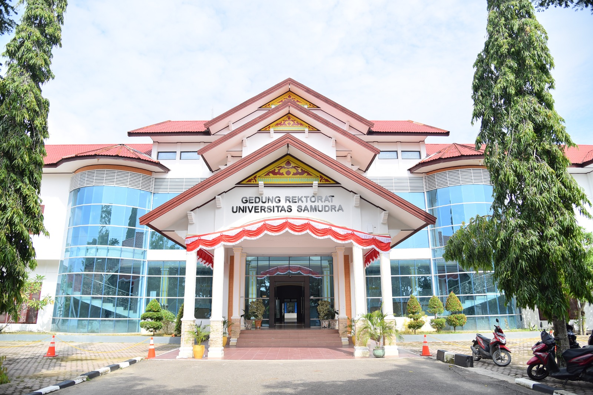

Terstruktur
Menjaga pekerjaan tetap jelas, rapi, dan dapat diandalkan.
01 / Tentang saya

Saya adalah Intan Saravina, S.Kom, lulusan Informatika Universitas Samudra dengan IPK 3.60.
Selama masa studi, saya berfokus pada bidang multimedia—menggabungkan kreativitas visual dengan cara berpikir sistematis. Saya juga memahami dasar pengolahan citra, pengembangan web, dan cyber security.
Keingintahuan adalah kompas saya: selalu terbuka untuk belajar, beradaptasi, dan memberi kontribusi terbaik dalam setiap kesempatan.

UNIVERSITAS SAMUDRA · 2022—2026
Menempuh pendidikan S1 Informatika dengan fokus Multimedia, serta memperluas pemahaman pada teknologi web, pengolahan citra, dan keamanan siber.
Lihat perjalanan →Yang saya bawa
Menjaga pekerjaan tetap jelas, rapi, dan dapat diandalkan.
Nyaman mempelajari hal baru dan menyesuaikan diri.
Berkomunikasi dengan hangat untuk mencapai tujuan bersama.